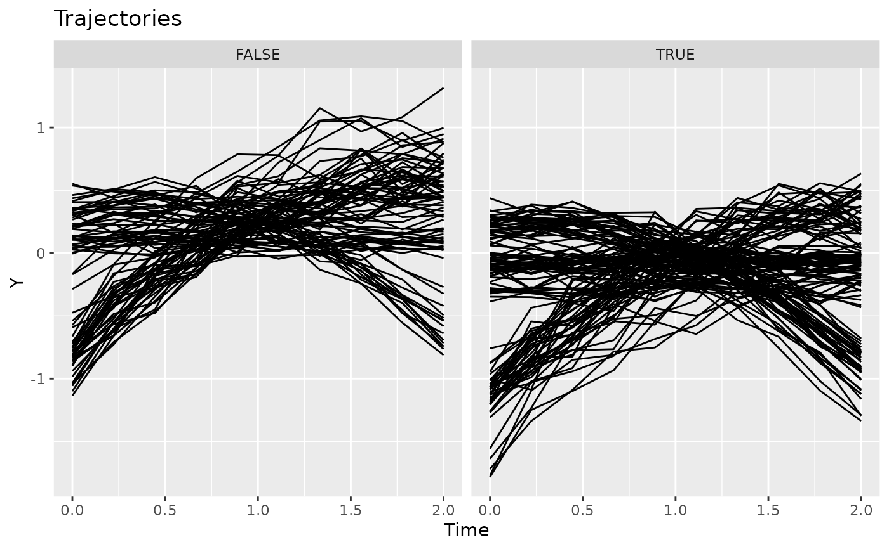
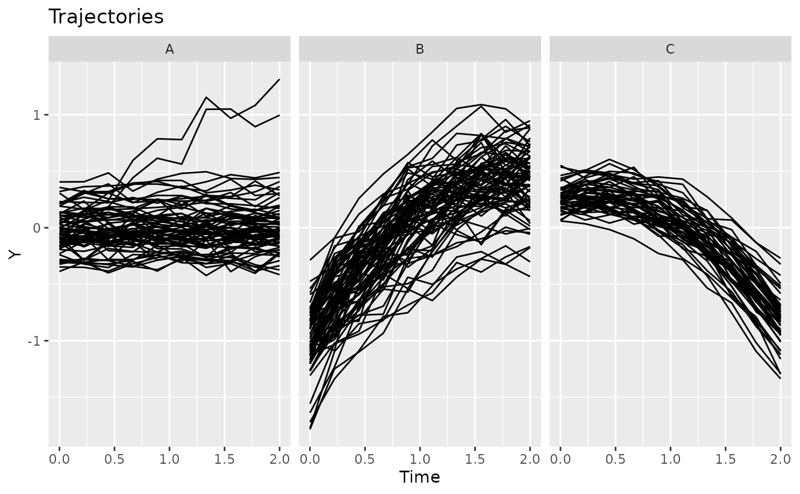

Plots the output of trajectories for the given object.
The data or model or extract the trajectories from.
Arguments passed on to trajectories
Response variable character name or a call.
The time variable name.
The identifier variable name.
Cluster variable name. If unspecified, trajectories are not grouped. Alternatively, cluster is a vector indicating cluster membership per id.
Whether to facet by cluster.
data(latrendData)
if (require("ggplot2")) {
plotTrajectories(latrendData, response = "Y", id = "Id", time = "Time")
plotTrajectories(
latrendData,
response = quote(exp(Y)),
id = "Id",
time = "Time"
)
plotTrajectories(
latrendData,
response = "Y",
id = "Id",
time = "Time",
cluster = "Class"
)
# compute cluster membership based on the mean being below 0
assignments <- aggregate(Y ~ Id, latrendData, mean)$Y < 0
plotTrajectories(
latrendData,
response = "Y",
id = "Id",
time = "Time",
cluster = assignments
)
}

data(latrendData)
method <- lcMethodLMKM(Y ~ Time, id = "Id", time = "Time")
model <- latrend(method, latrendData, nClusters = 3)
if (require("ggplot2")) {
plotTrajectories(model)
}
